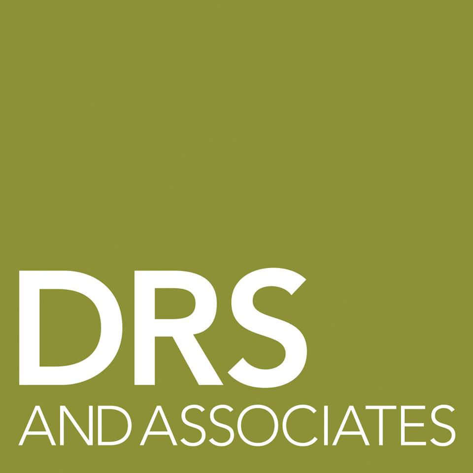

Internsip Experience.jpg)
Internship Experience

DRS and Associates is a full-service communications firm for high-end manufacturers of lighting, plumbing and home-furnishing products. The firm specializes in story telling; sharing each clients unique design and manufacturing philosophy with journalists, architects, and interior designers. Below are some of the most valuable experiences I have had at DRS.
 BRAND CONSULTANCY.jpg)
Brand Consultancy
 SALES.jpg)
Sales
 SOCIAL MEDIA.jpg)
Social Media
 INDEPENDENT PROJECTS.JPG)
Extracurricular Projects

As a student of Pierce College, I have found incredible value in being engaged on campus beyond academics. In Fall semester of 2017, I decided to join my campuses vibrant political community. Throughout the course of the semester I was able to help design a comprehensive media profile for one of the political clubs on campus. I was also able to engage in my campuses political dialogue during the Day of Politics event. Here is some of the my extracurricular work.
 MEDIA DESIGN.JPG)
Media Design
 SPEECH AND DEBATE.jpg)
Speech And Debate
 MOQU Introduction.jpg)
 MOQU Discovery.jpg)
 MOQU Overview and Elevator Pitch.jpg)
 E-BLAST.jpg)
 COVERAGE.jpg)
 COVERAGE.jpg)
 Buster & Punch Introduction.jpg)
 Westedge Design Fair Introduction .jpg)
 SALES.JPG)
 Interview.jpg)
 WESTEDGE COVERAGE.jpg)
 Social Media.jpg)
 Social Media Post.png)
 JOTS.jpg)
 YAL INTRO.jpg)
 DESIGN.jpg)
 Newspaper Column.jpg)
 Outcome.JPG)
 DAY OF POLITICS.jpg)
 DEBATE.JPG)
 OUTCOME.JPG)